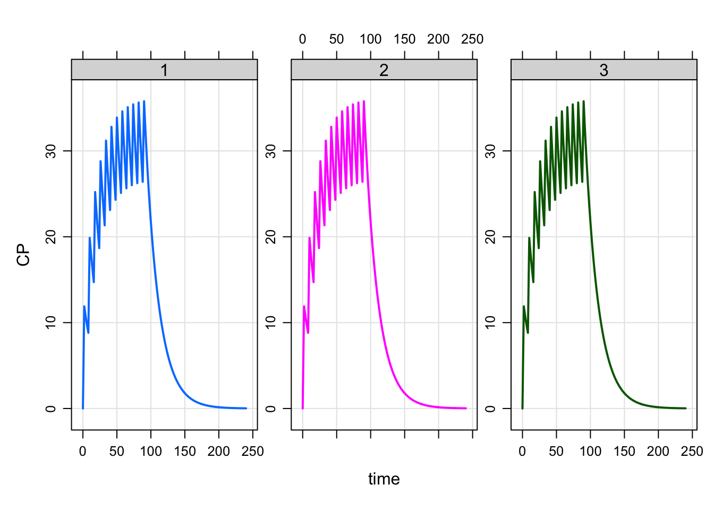
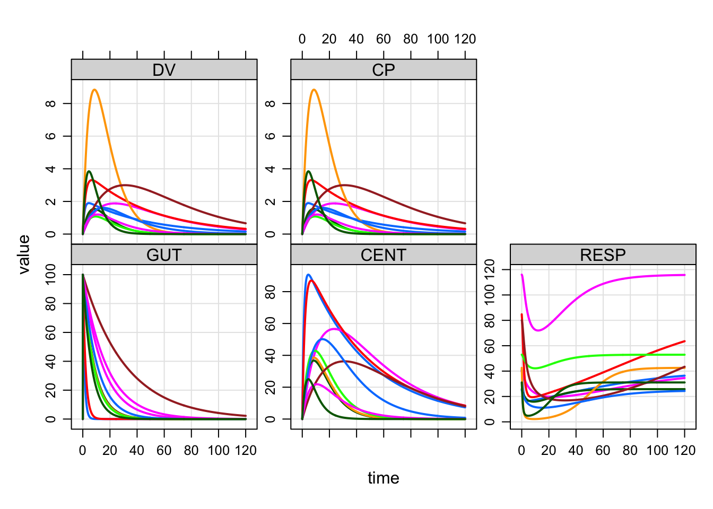

Chapter 3 Input data sets
Input data sets are used in mrgsolve to allow the user to specify interventions and input data items.
Please see the mrgsolve help topic ?exdatasets for examples of all of the
data sets discussed in this chapter. The example data sets are embedded in the
mrgsolve package and may be used at any time.
3.1 Overview
Data sets are the primary mechanism for establishing the scope of your
simulations in mrsolve, including individuals, interventions, observation
times, and parameter values. For both data_set and idata_set (see below),
you may include columns in the data sets that have the same names as the
parameters in your model (section 1.1, 2.2.4).
mrgsolve can recognize these columns and update the parameter list as the
simulation proceeds. This process is of key importance when planning and
executing complex simulations and is further discussed in section
11.3.
3.2 Event data sets (data)
Event data sets are entered as data.frame, with one event per row. Events may
be observations, doses, or other type events. In mrgsolve documentation, we
refer to these data sets as data or data_set (after the function that is
used to associate the data set with the model object prior to simulation).
Event data sets have several special column names that mrgsolve is always aware of:
IDthe subject id. This id does not need to be unique in thedata_set: mrgsolve detects an new individual when the current value ofIDis different from the immediate preceding value ofID. However, we always recommend using uniqueID.timeorTIME: states the time of the data recordevidorEVID: the event id indicator.evidcan take the values:- 0 = observation record
- 1 = dosing event (bolus or infusion)
- 2 = other type event, with solver stop and restart
- 3 = system reset
- 4 = reset and dose
- 8 = replace the amount in the compartment with
amt
amtorAMT: the dose amount (ifevid==1)cmtorCMT: the dosing compartment number. This may also be a character value naming the compartment name. The compartment number must be consistent with the number of compartments in the model for dosing records (evid==1).
For observation records, acmtvalue of 0 is acceptable. Use a negative compartment number withevid2 to turn a compartment off.
rateorRATE: if non-zero andevid=1orevid=4, implements a zero-order infusion of durationF_CMT*amt/rate, whereF_CMTis the bioavailability fraction for the dosing compartment. Userate = -1to model the infusion rate andrate = -2to model the infusion duration, both in$MAIN(see sections 2.2.7, 2.3.30,2.3.32, 2.3.34).iiorII: inter-dose interval;ii=24means daily dosing when the model time unit is hoursaddlorADDL: additional doses; a non-zero value inaddlrequires non-zeroiion the same recordssorSSsteady state indicator; use 1 to implement steady-state dosing; 0 otherwise. mrgsolve also recognizes dosing records wheress=2. This allows combination of different steady state dosing regimens under linear kinetics (e.g. 10 mg QAM and 20 mg QPM daily to steady state).
The column names in the preceding list were written either as lower case form
(e.g. amt) or upper case form (e.g. AMT). Either may be used, however
the data set will be checked for consistency of usage. An error will be
issued in case a mixture of lower and upper case names are found.
In addition to these special column names, mrgsolve will recognize columns in
data_set that have the same name as items in the parameter list (see
2.2.4 and 1.1). When mrgsolve sees that the
names match up, it will update the values of those matching names based on what
it finds as it moves through the data set (see section
11.3).
3.2.1 Two types of data_set
mrgsolve distinguishes between two types of data sets: data sets that have at
least one observation record (evid=0) and data sets that have no records
with evid=0.
- Full data sets have a mix of observations and dosing events (likely, but
not required). When mrgsolve finds one record with
evid=0, it assumes that ALL output observation times are to come from the data set. In this case the simulation output time grid discussed in 1.3 is ignored and only observations found in the data set appear in the simulated output. Use full data sets when you want a highly customized sampling schedule or you are working with a clinical data set. - Condensed data sets have no records with
evid=0. In this case, mrgsolve will fill the simulated output with observations at times specified by the output time grid ( section 1.3 and see section 11.5). These are very convenient to use because there is less data assembly burden and output data sets can easily be created with very dense sampling scheme or highly customized sampling schemes with very little work. Use a condensed data set when you want a uniform set of sampling times for all subjects in the data set.
Example of condensed data set
data(extran1, package = "mrgsolve")
extran1. ID amt cmt time addl ii rate evid
. 1 1 1000 1 0 3 24 0 1
. 2 2 1000 2 0 0 0 20 1
. 3 3 1000 1 0 0 0 0 1
. 4 3 500 1 24 0 0 0 1
. 5 3 500 1 48 0 0 0 1
. 6 3 1000 1 72 0 0 0 1
. 7 4 2000 2 0 2 48 100 1
. 8 5 1000 1 0 0 0 0 1
. 9 5 5000 1 24 0 0 60 1See ?exdatasets in the R help system after loading mrgsolve.
Example of full data set
data(exTheoph, package = "mrgsolve")
head(exTheoph). ID WT Dose time conc cmt amt evid
. 1 1 79.6 4.02 0.00 0.00 1 4.02 1
. 2 1 79.6 4.02 0.25 2.84 0 0.00 0
. 3 1 79.6 4.02 0.57 6.57 0 0.00 0
. 4 1 79.6 4.02 1.12 10.50 0 0.00 0
. 5 1 79.6 4.02 2.02 9.66 0 0.00 0
. 6 1 79.6 4.02 3.82 8.58 0 0.00 0See ?exdatasets in the R help system after loading mrgsolve.
Augmenting observations in a clinical data set
Occasionally, we want to simulate from a clinical data set (with observation
records as actually observed in a population of patients) but we also want to
augment those observations with a regular sequence of times (for example, to
make a smooth profile on a plot). In that case, you can set obsaug = TRUE
when calling mrgsim.
For example:
mod <- mrgsolve:::house()
out <-
mod %>%
data_set(exTheoph, ID==1) %>%
carry.out(a.u.g) %>%
obsaug %>%
mrgsim(end=24, delta=1)
out. Model: housemodel
. Dim: 36 x 8
. Time: 0 to 24.37
. ID: 1
. ID time a.u.g GUT CENT RESP DV CP
. 1: 1 0.00 1 0.0000 0.000 50.00 0.00000 0.00000
. 2: 1 0.00 0 4.0200 0.000 50.00 0.00000 0.00000
. 3: 1 0.25 0 2.9781 1.035 49.95 0.04552 0.04552
. 4: 1 0.57 0 2.0285 1.961 49.81 0.08624 0.08624
. 5: 1 1.00 1 1.2108 2.729 49.61 0.12001 0.12001
. 6: 1 1.12 0 1.0484 2.875 49.57 0.12643 0.12643
. 7: 1 2.00 1 0.3647 3.422 49.34 0.15048 0.15048
. 8: 1 2.02 0 0.3560 3.428 49.33 0.15072 0.15072out %>% select(time) %>% unlist %>% unname. [1] 0.00 0.00 0.25 0.57 1.00 1.12 2.00 2.02 3.00 3.82 4.00 5.00
. [13] 5.10 6.00 7.00 7.03 8.00 9.00 9.05 10.00 11.00 12.00 12.12 13.00
. [25] 14.00 15.00 16.00 17.00 18.00 19.00 20.00 21.00 22.00 23.00 24.00 24.37obsaug requests that the data set be augmented with observations from the
simulation time grid. We can optionally request an indicator called a.u.g to
appear in the output that takes value of 1 for augmented observations and 0 for
observations from the data set.
3.2.2 Sorting requirements
The IDs in the data set can appear in any order. However, an error will be
generated if time on any record is less that time on the previous record
within any ID.
3.2.3 Creating data sets
The expand.ev function is provided by mrgsolve to help in creating data sets
of a certain style. But any R code that produces a valid data set is fine to
use.
3.2.4 Example
To create a data set of 3 people each receiving 250 mg every 8 hours for 12 total doses:
data <- expand.ev(ID=1:3, amt=250, ii=8, addl=11)
data. ID time amt ii addl cmt evid
. 1 1 0 250 8 11 1 1
. 2 2 0 250 8 11 1 1
. 3 3 0 250 8 11 1 1Notice that expand.ev assumes that time is 0 and cmt is 1. To dose as a
2-hour infusion into the second compartment use:
data <- expand.ev(ID=1:3, amt=250, rate=125, ii=8, addl=11, cmt=2)
data. ID time amt rate ii addl cmt evid
. 1 1 0 250 125 8 11 2 1
. 2 2 0 250 125 8 11 2 1
. 3 3 0 250 125 8 11 2 1Use data_set to pass the data into the problem.
For example:
mod <- mrgsolve:::house()
mod %>%
data_set(data) %>%
mrgsim(end=240) %>%
plot(CP~time|factor(ID))
3.3 Individual data sets (idata)
Individual data sets carry individual-level data. This individual data is used in several different ways:
- Individual-level parameters: Just prior to simulating any individual,
mrgsolve checks the appropriate row in
idata(if supplied) for any columns with parameter names. If parameter names are found, the parameter list is updated and that update remains in effect for the duration of that individual’s data records. - Individual- or group-level designs: Each individual or group of individual
may be assigned a different sampling design. For example, individuals in arm 1
may need to be simulated for 4 weeks whereas individuals in arm 2 may need to be
simulated for 8 weeks.
idatamay be used to identify one of several sampling designs for each individual or group of individuals. - Individual-level compartment initialization: if a model has a compartment
called
CMTand mrgsolve finds a column inidatacalledCMT_0, the value ofCMT_0will be used to initialize that compartment with, potentially a different value for each individual. Note that there are several other ways to initialize compartments detailed in 11.2.
idata_set are entered as data.frame with one unique ID per row. In
mrgsolve documentation, we refer to individual data sets idata or
idata_set to distinguish them from event data sets (see section
3.2).
An idata_set looks like this:
data(exidata)
exidata. ID CL VC KA KOUT IC50 FOO
. 1 1 1.050 47.80 0.8390 2.450 1.280 4
. 2 2 0.730 30.10 0.0684 2.510 1.840 6
. 3 3 2.820 23.80 0.1180 3.880 2.480 5
. 4 4 0.552 26.30 0.4950 1.180 0.977 2
. 5 5 0.483 4.36 0.1220 2.350 0.483 10
. 6 6 3.620 39.80 0.1260 1.890 4.240 1
. 7 7 0.395 12.10 0.0317 1.250 0.802 8
. 8 8 1.440 31.20 0.0931 4.030 1.310 7
. 9 9 2.570 18.20 0.0570 0.862 1.950 3
. 10 10 2.000 6.51 0.1540 3.220 0.699 9Here we have an idata_set with 10 subjects, one subject per row. The ID
column connects the data in each row to the data in a data_set, which also
requires an ID column.
The ID column is the only required column name in idata_set and ID should
always be a unique identifier for that row.
3.3.1 Use case
idata_set is usually helpful for implementing a batch of simulations when a
data_set is not used. The batch may be as a sensitivity analysis or for
population simulation. Usually, an events object is used with idata, but it
is not required.
Use the idata_set function to pass the data set into the problem.
For example:
mod <- mrgsolve:::house()
mod %>%
idata_set(exidata) %>%
ev(amt=100) %>%
mrgsim %>% plot
Because there were 10 subjects in the idata_set, we get 10 profiles in the
output. Each “individual” or “unit” received the same 100 mg dose. We would
use a data_set to assign different doses to different individuals.
3.4 Numeric data only
The data.frame holding the data_set or idata_set may have any type of data
in its columns. However, only numeric data can actually get passed into the
simulation engine. mrgsolve will automatically look for non-numeric columns
and drop them from the data_set or idata_set with a warning.
3.5 Data set validation
A the time of simulation, mrgsolve will validate the input data set, removing non-numeric columns, checking for missing values in parameter columns, checking compartment numbers, etc.
Users can pre-validate the data set so that this does not need to happen at run time.
data(exTheoph)
head(exTheoph). ID WT Dose time conc cmt amt evid
. 1 1 79.6 4.02 0.00 0.00 1 4.02 1
. 2 1 79.6 4.02 0.25 2.84 0 0.00 0
. 3 1 79.6 4.02 0.57 6.57 0 0.00 0
. 4 1 79.6 4.02 1.12 10.50 0 0.00 0
. 5 1 79.6 4.02 2.02 9.66 0 0.00 0
. 6 1 79.6 4.02 3.82 8.58 0 0.00 0mod <- modlib("pk1"). Loading model from cache.valid <- valid_data_set(exTheoph,mod)
str(valid). 'valid_data_set' num [1:132, 1:9] 1 1 1 1 1 1 1 1 1 1 ...
. - attr(*, "dimnames")=List of 2
. ..$ : NULL
. ..$ : chr [1:9] "ID" "WT" "Dose" "time" ...This can improve efficiency when performing a very large number of replicate simulations on the same data set, but is unlikely to provide a meaningful speed-up for a single simulation or a small number of simulations.
3.6 Data sets for use with $PRED
Because there are no compartments involved, there are relaxed data set
requirements for models that utilize $PRED.
timeorTIMEis not required as input; when this is not supplied, atimecolumn will be included in output with value 0- When
timeorTIMEis supplied, it may be negative; but records must still be sorted bytimeorTIME - If supplied,
cmtorCMTmust be zero - An error is generated if
rateorRATEis supplied - An error is generated if
ssorSSis supplied